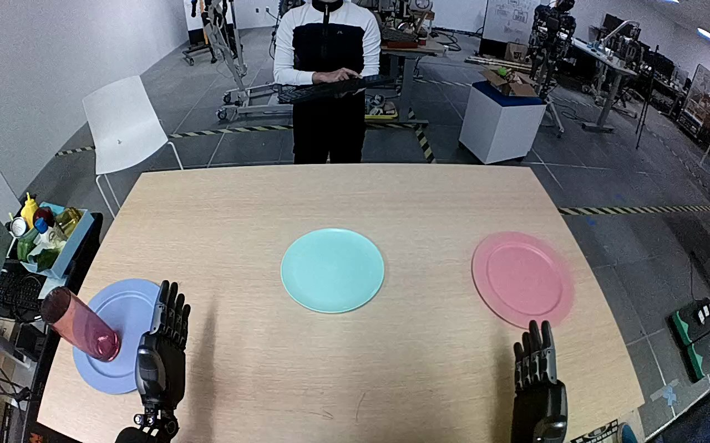

NVIDIA GR1 · 9
Video 9

Visual review action_review.json
{
"prompt_protocol": "humanoid_action_v1",
"prompt_provenance": "visually_authored_from_video_and_initial_frame",
"reviewed_contact_sheets": [
"sheet_001.jpg"
],
"inspected_frame_stride": 2,
"inspected_sampled_frame_count": 60,
"initial_scene": "Egocentric view looking forward and down between the robot arms onto a table. A tall translucent purple glass stands on the blue plate at the left; the teal target plate is near the center and an unused pink plate is at the right. Both robot hands initially are open. A person beyond the table does not interact with the glass or robot hands.",
"observed_sequence": [
{
"start_frame": 0,
"end_frame": 12,
"action": "Both open hands remain near the near table edge; glass remains on the blue plate.",
"confidence": "high"
},
{
"start_frame": 13,
"end_frame": 36,
"action": "Left arm advances over the blue plate and turns its open hand toward the glass, positioning the fingers beside the upper side. Right hand remains open and away from the object.",
"confidence": "high"
},
{
"start_frame": 37,
"end_frame": 61,
"action": "Left fingers and thumb move around the glass, making successive contact and adjusting the hand position while the glass remains on the blue plate.",
"confidence": "high"
},
{
"start_frame": 62,
"end_frame": 79,
"action": "Left hand closes a side grasp around the glass and begins raising it; right hand provides no support.",
"confidence": "high"
},
{
"start_frame": 80,
"end_frame": 104,
"action": "Left hand lifts the glass clear of the blue plate and carries it inward toward the teal plate while maintaining a near-upright orientation.",
"confidence": "high"
},
{
"start_frame": 105,
"end_frame": 114,
"action": "Left hand lowers the glass upright onto the central region of the teal plate, still holding its side.",
"confidence": "high"
},
{
"start_frame": 115,
"end_frame": 119,
"action": "Left thumb and fingers open away from the glass; the glass remains upright on the teal plate and the open left hand remains beside it.",
"confidence": "high"
}
],
"arm_hand_roles": {
"left": "Sole manipulating hand: approaches, establishes a side grasp, lifts, transports, lowers and releases the glass.",
"right": "Remains open near the right table edge; no object contact, stabilization, support or transfer."
},
"anatomical_side_evidence": {
"convention": "Robot-relative anatomy in the forward/downward egocentric view, rather than the anatomy of the person facing the camera.",
"evidence": "The two robot forearms enter from the corresponding lower body sides of the egocentric camera. The active forearm is continuously connected through the lower-left wrist. Initial mirrored palm-facing hand geometry shows the active left hand thumb on the outer image-left side, opposite the right hand thumb on image-right; subsequent rotation brings the left thumb toward the glass. This agrees with the source left-hand instruction.",
"confidence": "high",
"uncertainty": "Robot shoulder attachments are outside the egocentric image; side is grounded in paired forearm placement and thumb/palm anatomy."
},
"coordination": "Single-hand manipulation; no hand-to-hand transfer and no interaction with the background person.",
"terminal_state": "Tall glass stands upright near the center of the teal plate after the left hand opens. Left hand remains immediately beside the glass; right hand stays open and uninvolved. The blue plate is empty.",
"uncertainties": [
"Shoulder attachments are outside the egocentric view; paired arm placement and visible hand anatomy establish the active left hand. Exact millimeter separation between the open left fingers and the glass at the last frame is not measurable, but the enclosing grasp has visibly opened and the glass stands on the plate."
],
"annotation_discrepancies": [],
"evidence_frame_indices": [
0,
20,
40,
64,
78,
90,
104,
114,
119
],
"selected_execution_status": "success",
"inspection_coverage": {
"contact_sheet_frames": "Every second decoded frame, 0 through 118 inclusive, covering the complete 120-frame source.",
"initial_png": "Source initial PNG inspected at native 1280x800.",
"native_transition_frames": [
20,
40,
64,
78,
90,
104,
114,
119
],
"coverage_note": "All returned contact sheets and all listed native detail PNGs were visually viewed."
},
"video_id": "9",
"dataset": "NVIDIA_GR1_100",
"dedicated_review_agent": "review_gr1_9",
"review_source_video": "NVIDIA_GR1_100/9/original/original.mp4",
"source_frame_count": 120,
"source_fps": 20.0,
"native_detail_frames": [
20,
40,
64,
78,
90,
104,
114,
119
],
"world_model_prompt": "The robot uses its left hand to grasp the tall purple glass around its side and lift it from the blue plate. It carries the glass upright to the center of the teal plate, lowers it onto the plate, and opens its fingers, leaving the glass standing upright with its left hand beside it. Keep the camera fixed; preserve robot geometry, physically valid joint motion, and normal gripper opening and closing.",
"original_task_instruction": "Use the left hand to pick up tall purple glass from center of blue plate to center of teal plate.",
"selected_segment": {
"start_frame": 0,
"end_frame_exclusive": 120,
"reason": "Complete original single-task reference; no cropping or trimming requested."
},
"source_video_sha256": "01b4b9cf362c04fbf0b9fa0c89d3442a989220709985bb6ff4fd6ca6e3438cdf",
"review_completed_at": "2026-10-13T18:38:28.288482+00:00"
}